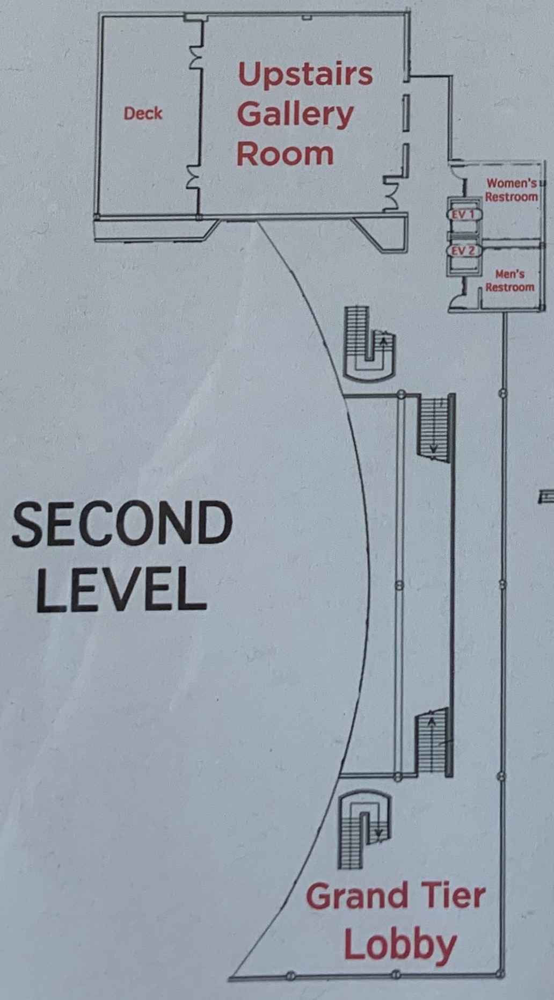
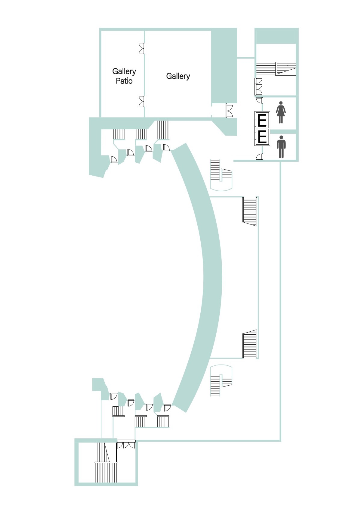
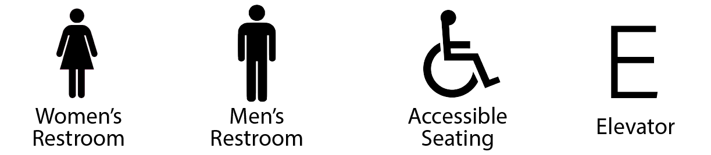

<ion-header [translucent]="true">
  <ion-toolbar color="kogerblue">
    <ion-buttons slot="start" color="light">
      <ion-back-button></ion-back-button>
    </ion-buttons>
    
  </ion-toolbar>
</ion-header>

<ion-content [fullscreen]="true">
  <ion-card class="ion-padding">
    <ion-card-title class="ion-text-center">2nd Floor: Grand Tier/Gallery</ion-card-title>
    <!-- <ion-card-subtitle>Tap to zoom in on map</ion-card-subtitle> -->
    <!--  -->
    <ion-slides [options]="sliderOpts" zoom>
      <ion-slide>
        <div class="swiper-zoom-container">
          
        </div>
      </ion-slide>
    </ion-slides>
    
    
  </ion-card>
</ion-content>
